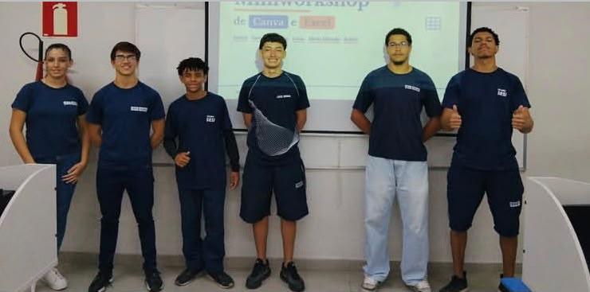
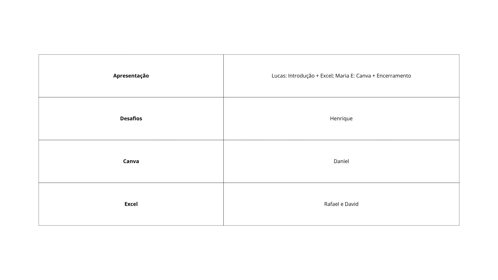
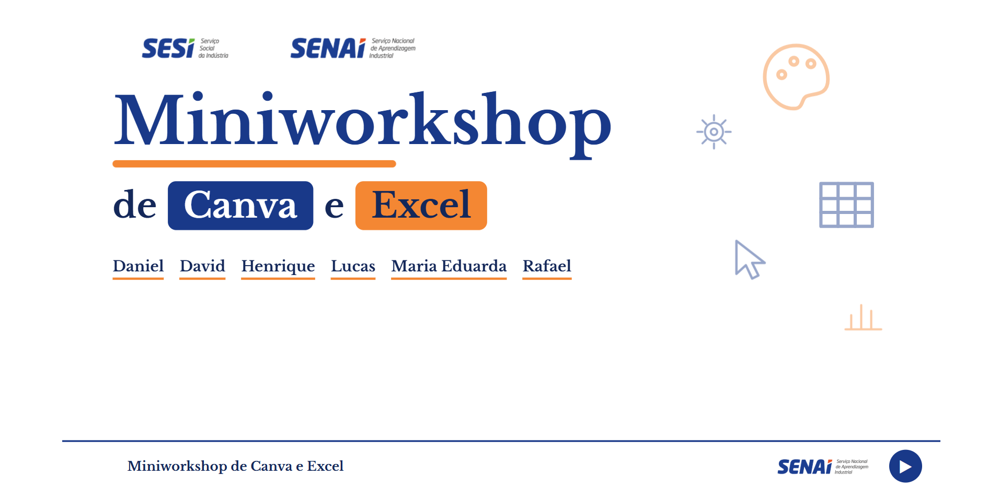
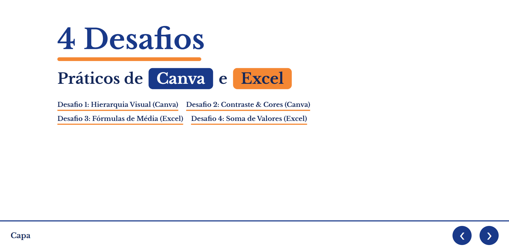
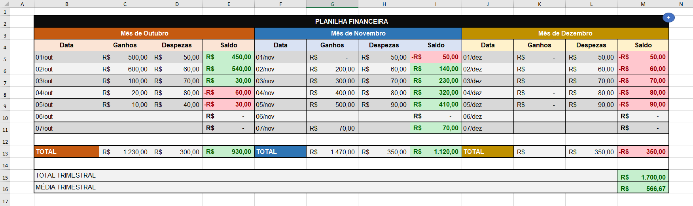
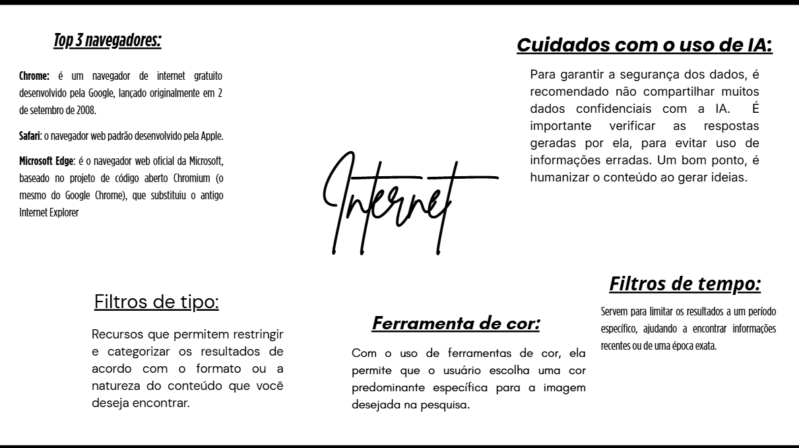
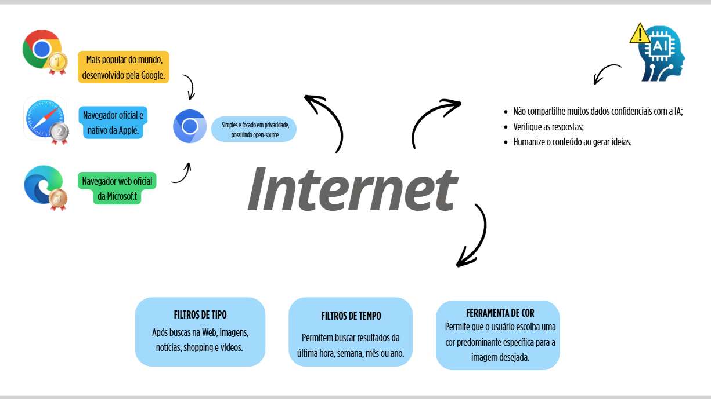

SENAI Varginha • Curso Técnico de Informática para Internet
O Mundo SENAI é um evento anual realizado pelas unidades do SENAI em todo o Brasil que abre as portas da instituição para a comunidade, estudantes e empresas. Durante o evento, os alunos apresentam projetos práticos, oficinas e demonstrações tecnológicas desenvolvidas nos cursos técnicos e de qualificação profissional.
Para a edição de 2026 no SENAI Varginha, nossa equipe do curso Técnico de Informática para Internet realizou um mini-workshop prático de Canva e Microsoft Excel voltado aos visitantes do evento, abordando:
Acesse as páginas utilizadas durante o workshop ou faça o download dos arquivos de apoio:
A apresentação foi organizada de forma colaborativa entre cinco integrantes:
prompt.docx).tabela-excel.xlsm).mapa-menta-antes.png) para demonstrar ao vivo aos visitantes técnicas de alinhamento, hierarquia visual e design até chegar ao resultado final organizado (mapa-mental-depois.png).Durante o evento, a página html/apresentacao.html foi exibida na tela principal da sala para guiar a explicação. Já a página html/desafios.html — contendo slides interativos com perguntas práticas — foi transmitida e aberta simultaneamente nos computadores de todos os visitantes por meio do software de gerenciamento de laboratório Veyon.
mundo-senai-2026/
├── index.html # Página inicial do repositório
├── README.md # Documentação principal do projeto
├── prompt.docx # Prompt adaptado e utilizado com IA
├── tabela-excel.xlsm # Planilha financeira com macros geradas por IA
├── html/
│ ├── apresentacao.html # Slides da apresentação exibidos na tela da sala
│ └── desafios.html # Slides interativos enviados aos visitantes via Veyon
└── fotos/
├── apresentacao.png # Registro da apresentação em sala
├── desafios.png # Registro da tela/dinâmica de desafios
├── divisao.jpg # Registro da divisão de tarefas da equipe
├── equipe.jpg # Foto da equipe participante
├── mapa-menta-antes.png # Mapa mental mal formatado (antes da edição)
├── mapa-mental-depois.png # Mapa mental reestruturado ao vivo (depois)
└── tabela.png # Visualização da planilha financeira no Excel

equipe.jpg)
divisao.jpg)
apresentacao.png)
desafios.png)
tabela.png)
mapa-mental-antes.png)
mapa-mental-depois.png)